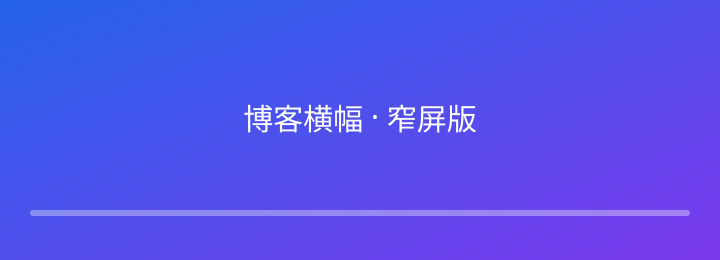

用语义化标签重写你的页面
为什么语义化
语义化让爬虫（SEO）和读屏器（无障碍）
都能读懂页面：<nav> 是可跳过的导航、<main>
是主体内容、<h1> 明确主标题。比起一堆 <div>，
语义化标签让结构"一读就懂"。

语义化让爬虫（SEO）和读屏器（无障碍）
都能读懂页面：<nav> 是可跳过的导航、<main>
是主体内容、<h1> 明确主标题。比起一堆 <div>，
语义化标签让结构"一读就懂"。